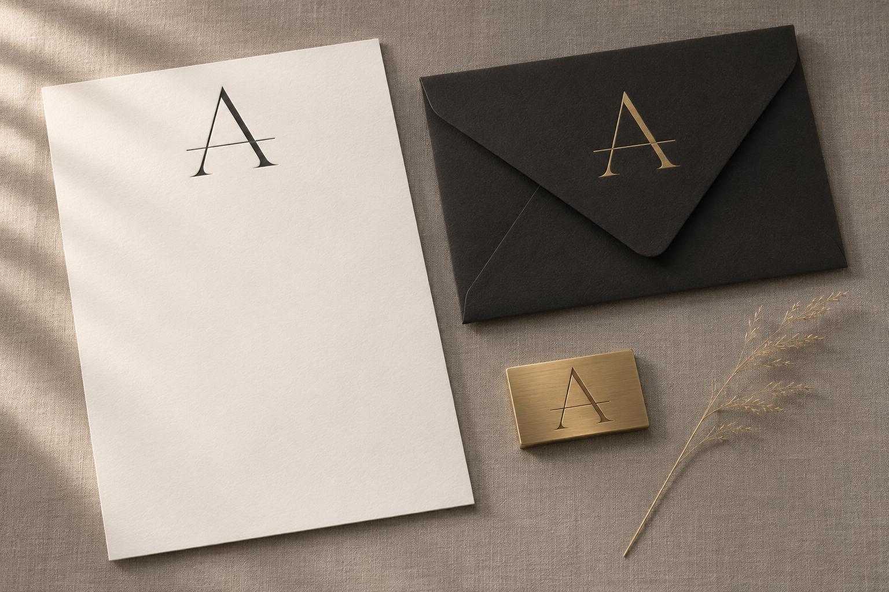
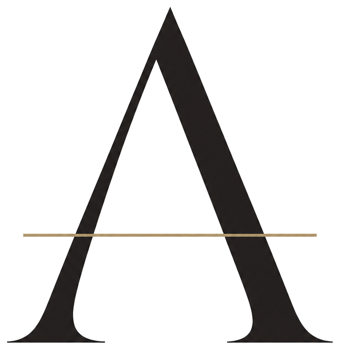
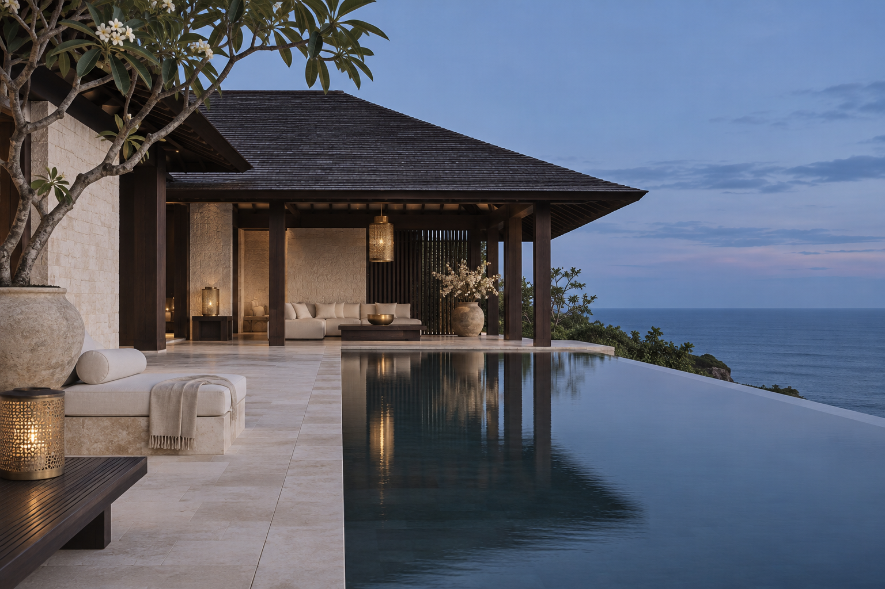
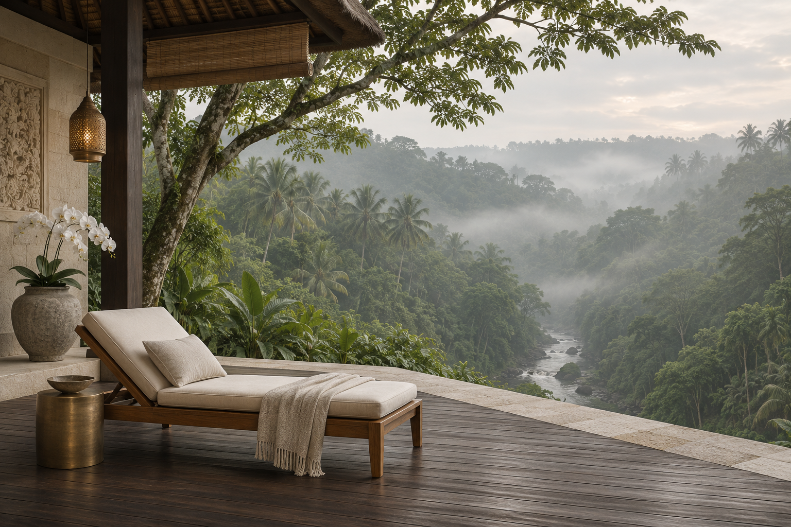
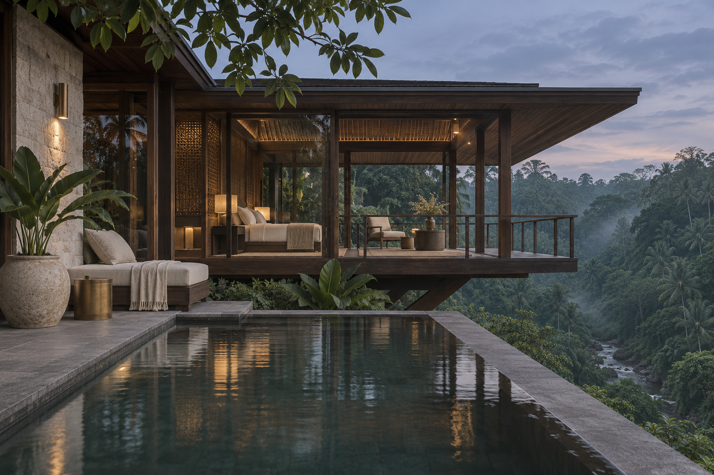
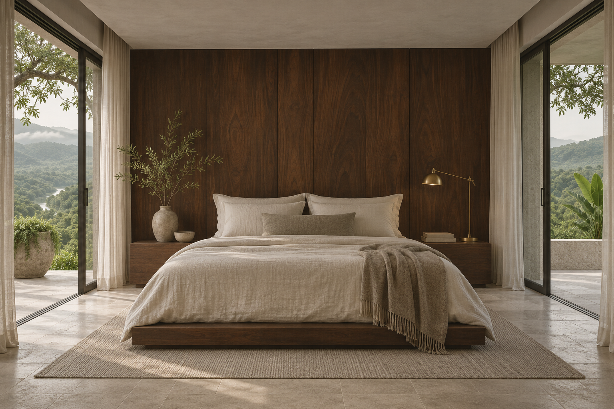
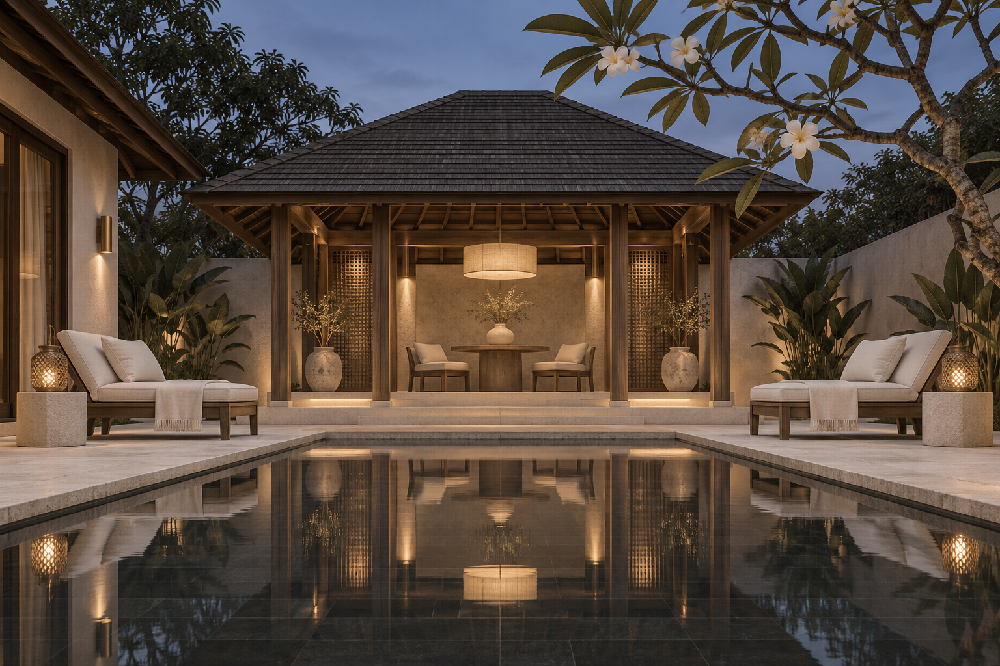
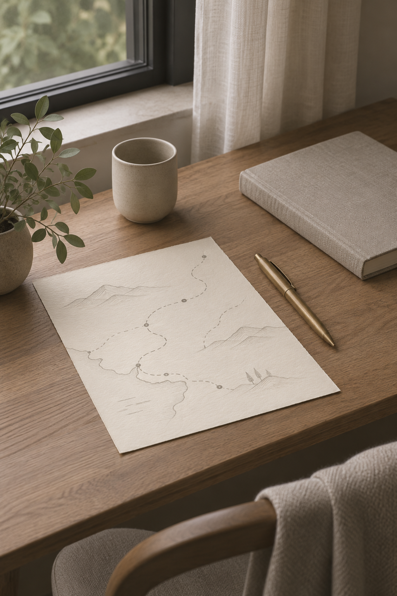

Aurelia Private Journeys
Private Sanctuary & Yacht Advisory — Panduan lengkap identitas merek, sistem logo, palet warna WCAG 2.1 AA, tipografi Cormorant Garamond + DM Sans, anatomi mesin pencari, dan komponen etalase Ortasys S4.


Posisi Merek & Temuan Riset Desain (Luxury & Bespoke)
Arsitektur visual memprioritaskan kejelasan destinasi dan pencapaian cepat ke mesin pencari di layar pertama.
Pemisahan tegas antara tipografi ekspresif pada tajuk dan tipografi fungsional berangka tabular pada harga & tanggal.
Seluruh token warna diuji terhadap standar kontras WCAG 2.1 AA (minimal 4,5:1 untuk teks dan 3:1 untuk batas komponen UI).
Transparansi harga ritel penuh dalam IDR dengan janji pengecekan harga langsung (live price check).
Master Mark, Varian Latar, Clear Space & Aplikasi Merek

Digunakan pada permukaan terang (#F7F5F0, #FFFFFF) dengan ruang bebas minimal 0,25× tinggi simbol.
Digunakan pada permukaan gelap (#24221F, #11100F) dan bagian footer malam.
Penerapan konsisten pada papan nama, kartu tamu, dan perlengkapan perjalanan.
Token Warna Inti & Derivasi Aksesibilitas
Primary
Primary action, active navigation, key brand anchor
Primary Hover
Hover & pressed state for primary controls
Secondary
Secondary highlights, badges & supporting accents
Tertiary
Warm supporting surfaces & editorial dividers
Accent
Focused emphasis markers & category tags
Background Canvas
Main page canvas & broad section background
Surface
Cards, search console, popovers & modals
Surface Muted
Secondary container contrast & table headers
Text Primary
Headings, body copy & primary data values
Text Muted (Raw)
Metadata, captions & helper descriptions
Border
Hairline card dividers & structural rules
Success
Live price assurance & verified confirmation
Warning
Quota notices & seasonal advisories
Error
Validation alerts & destructive actions
Matriks Verifikasi Kontras WCAG 2.1 AA
Text Primary on Canvas
#24221F on #F7F5F0
Text Primary on Surface
#24221F on #FFFFFF
White on Primary CTA
#FFFFFF on #24221F
Primary on Surface
#24221F on #FFFFFF
Derived AA Muted on Canvas
#69645C on #F7F5F0
Derived Field Border on Surface
#908C85 on #FFFFFF
Cormorant Garamond + DM Sans
Aa Bb Cc
Cormorant Garamond
Digunakan untuk judul hero, tajuk seksi, dan nama properti utama.
Aa 0123
DM Sans
Rp 2.450.000 · 9–12 Nov 2026 · 2 Dewasa (Tabular Numerals aktif).
Skala Sudut & Kontainer
Pola Tata Letak & Komponen Khas Preset 02
Hero Architecture (50/50 Editorial Gallery Split):
A museum-like split hero where the left 6 columns display unhurried serif typography (`Cormorant Garamond`), edition metadata, and advisory manifesto on warm alabaster canvas (`#F7F5F0`), while the right 6 columns frame a tall architectural sanctuary portrait with an inset brass border.
Search Engine UI (Architectural Ledger Console):
A zero-shadow, flat-bordered rectangular ledger (`rounded-xs`) divided into crisp hairline cells (`border-line`) with bottom-underlined inputs, uppercase tracked labels (`tracking-[0.18em]`), and a flush full-height charcoal authorization button.
Inventory Section Layout (Alternating Full-Width Lookbook Rows):
Replaces the 3-column card grid with full-width alternating editorial rows (Row 1: Image Left / Dossier Right; Row 2: Dossier Left / Image Right; Row 3: Image Left / Dossier Right), giving every sanctuary estate gallery-level breathing room.
Private Charters Layout (2-Column Editorial Spread):
Wide dual-column bespoke spreads with fine hairline frames and tabular tariff sheets.
Advisory Section (Architectural Ledger Table):
A 3-row horizontal specification table with Roman numerals (`I`, `II`, `III`) detailing discretion, transparent retail settlement, and deterministic availability.
Aset Visual Khusus Aurelia Private Journeys (./assets/*.webp)






Pedoman Implementasi Positif
- ✓ Do communicate luxury through restraint, typography, photography, and service clarity.
- ✓ Do keep booking and price information immediately understandable.
- ✓ Do use the muted bronze accent sparingly.
- ✓ Do prioritize authentic property imagery.
Batasan Kontrak Produk Ortasys S4
- ✕ Don't equate luxury with black-and-gold gradients, ornamental borders, or excessive animation.
- ✕ Don't make the booking interface difficult to find.
- ✕ Don't use low-contrast beige text for essential content.
- ✕ Don't claim VIP, concierge, exclusive inventory, or guaranteed upgrades without agency verification.
- ✕ Don't expose supplier net rates, agent margins, or internal B2B data.